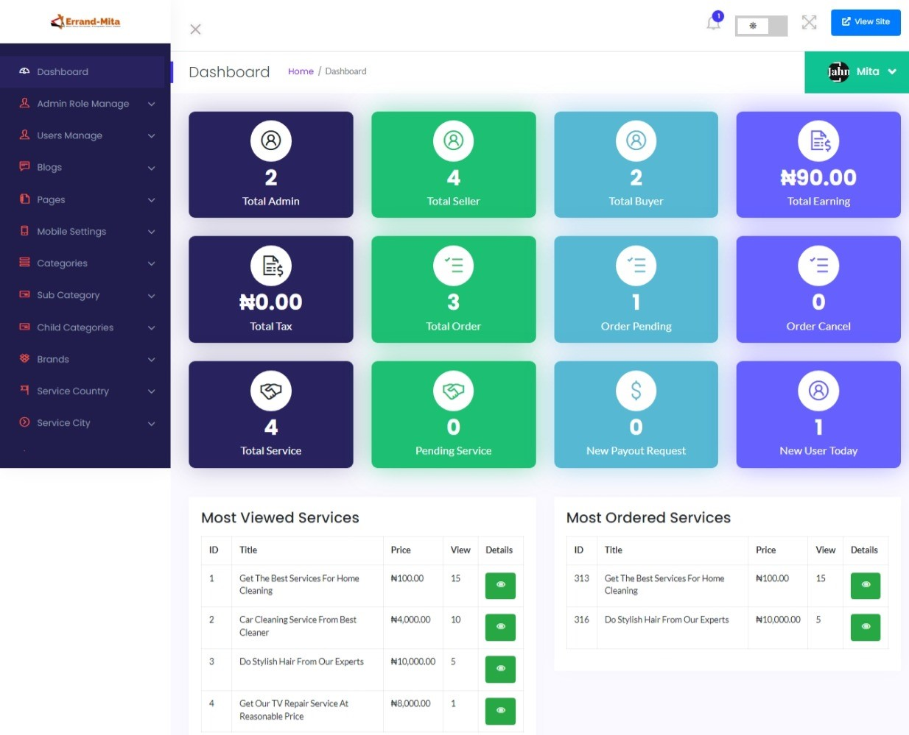
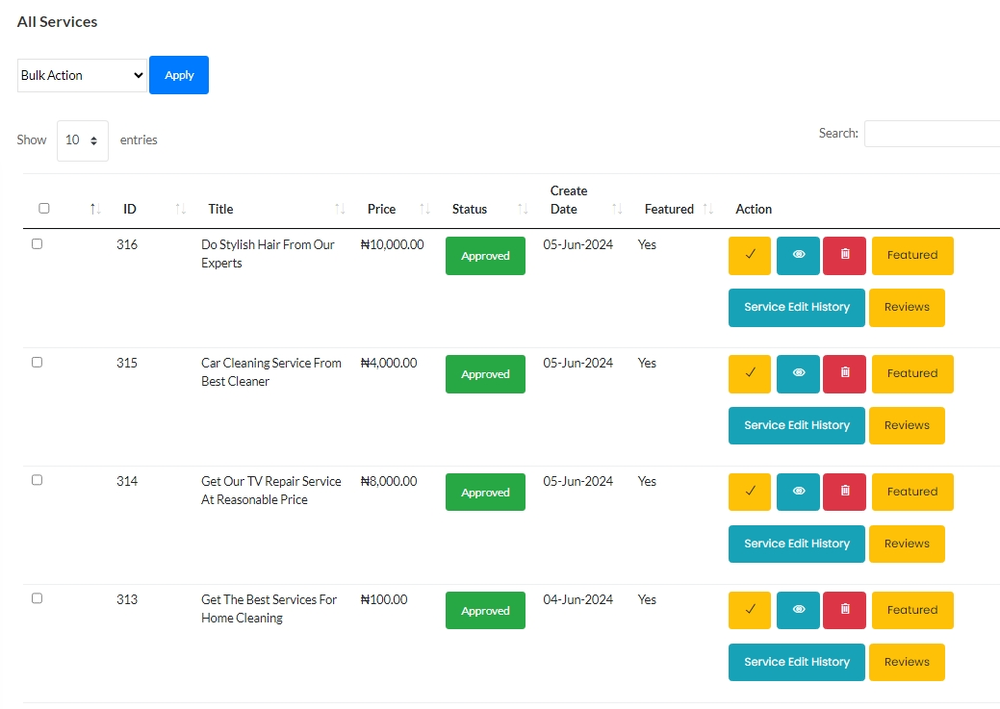

Intoduction
Errand-Mita - The premier Task Runners.
What you need to know .
Created : 5-APRIL-2024Last Edited : 20-May-2024
By : Team-Mita
Email : support@teammita.com
Welcome to the comprehensive documentation for Errand-mita, the premier online marketplace for connecting individuals with tasks and job opportunities. This documentation aims to provide detailed guidance on configuring, and managing the Errand-mita platform, ensuring an optimal experience for both administrators and clients.
Errand-mita is designed to facilitate seamless interactions between task posters and task runners, offering a robust set of features that include secure payment gateways, real-time notifications, and a user-friendly interface. Whether you are looking to outsource tasks or find job opportunities, Errand-mita provides a reliable and efficient solution tailored to meet your needs.
Info Page.
Thank you for Connecting with us Errand-Mita. If you have any questions or queries that are not answered in this document, please feel free to contact us via email. We will try to respond to you as soon as possible. Thank you so much.
Server Requirements and API
✓ PHP Version 8.1
✓ MySQL Version 5.7+ or MariaDB version 10.2+
✓ Fileinfo PHP extension
✓ Xampp 8.1.25
✓ Laravel 9x
✓ Live Chat: Tawk API
✓ Google Map API
Frequently Asked Questions about Errand-Mita
Question: What is Errand-Mita?
Answer: Errand Mita is a friendly and reliable errand-running service that understands the value of its users' time. In today's busy world, errands can often feel like a burden, which is why Errand Mita steps in to free up schedules and take those to-dos off their plate.Additionally, Errand Mita leverages its local expertise to navigate through tasks seamlessly, ensuring that errands are completed promptly and accurately. Ultimately, Errand Mita is here to make life easier for its users by providing a convenient and stress-free way to tackle errands.
Question: How does Errand Mita work?
Answer: Agents list their services on Errand Mita, and clients can browse through the listings, make purchases, and complete transactions directly on our platform. We facilitate secure payment processing and provide support throughout the buying and selling process.
Question: How does Errand Mita help the economy?
Answer:Errand Mita plays a vital role in stimulating the economy by enhancing efficiency and productivity. By freeing up individuals' schedules from mundane tasks through our efficient and reliable errand-running service, we empower them to focus on higher-value activities such as work, business, or leisure. This increased productivity translates into economic growth as individuals have more time to contribute to their professions or businesses, thereby driving innovation, generating revenue, and creating employment opportunities.
Question: How does Errand-mita help Nigerians?
Answer: Errand Mita positively impacts Nigerians by providing a solution to the time constraints and burdens associated with errands. In a fast-paced and demanding environment, our efficient and reliable errand-running service allows Nigerians to reclaim their time and focus on more important aspects of their lives. Whether it's managing work responsibilities, spending quality time with family, or pursuing personal interests, Errand Mita enables individuals to strike a better balance and lead fulfilling lives.
Question: How do I contact Errand Mita for support?
Answer: If you need assistance or have any questions, you can contact Errand Mita's customer support team via email at support@errrandmita.com or by phone at 09054723920. Our dedicated support team is here to help you with any inquiries or concerns.
Admin Dashboard
The items come with the latest Secure admin panel with a unique admin Dashboard. You can check all information and process by login on to your dashboard. You can manage all the basic information from here where the website is managed.

Agent Dashboard
In this section, you'll find an overview of the Agent's dashboard and task tracking functionalities, illustrating how agents manage their workload and monitor task progress in real-time.

Orders Info
Our Orders Display Dashboard provides a comprehensive view of your orders, guiding you through each step of the review process. Easily track the status of your orders and manage them efficiently.

Payments Output
Our Payment Output feature ensures that agents receive timely and accurate payments for their services. Agents can easily view and manage their payment details, ensuring transparency and accountability.

Services History
Keep track of all the services with our services History feature. A.
Client Dashboard
The Client Dashboard is your central hub for managing your orders and account settings. View your pending orders, update your profile information, and access your wallet—all in one convenient location.

Take control of your profile with our Client Profile Dashboard. Edit and update your contact details, address, and other personal information to ensure accuracy and reliability.
.png)
Support
This support page is designed to help you troubleshoot and resolve issues related to Errand-Mita. We understand technical difficulties can be frustrating, so we've compiled a variety of resources to get you back on track quickly.
Email Us : https://Errandmita.com/support